Unofficial study solution; not an official GTU answer key. Answers have not been independently verified. English text reflows; source equations, diagrams and Gujarati retain their original appearance. Use Enlarge image to inspect them.
આ બિનસત્તાવાર અભ્યાસ ઉકેલ છે, સત્તાવાર GTU જવાબવહી નથી. PDF માંથી ગુજરાતી લખાણ સાચું નીકળતું નથી, તેથી દરેક જવાબ મૂળ ચિત્રરૂપે જાળવ્યો છે. વાંચવા માટે ચિત્ર મોટું કરો. મૂળ પ્રશ્ન અને પરીક્ષાના વિકલ્પોની સૂચનાઓ અનુસરો.
Coverage: all five questions and every printed OR alternative are answered: 28 parts. The authentic English question is retained in both language views; answers are in English and Gujarati. Diagrams are schematic and not to scale.
Printed instructions: attempt all questions; make suitable assumptions; figures on the right indicate full marks; simple and non-programmable scientific calculators are permitted; the English version is authentic.
Interpretation: printed Murphy, Henery and Meir are explained using the conventional names Murphree, Henry and Miers. Q5(a) identifies temperatures by the usual unsaturated-air ordering; pressure and psychrometer conditions are not supplied to verify the numerical set independently. Other examples are illustrative.
Code: this is the supplied 4350501 paper, not a new-scheme DI05005011 paper. These are study materials, not an official GTU answer key.
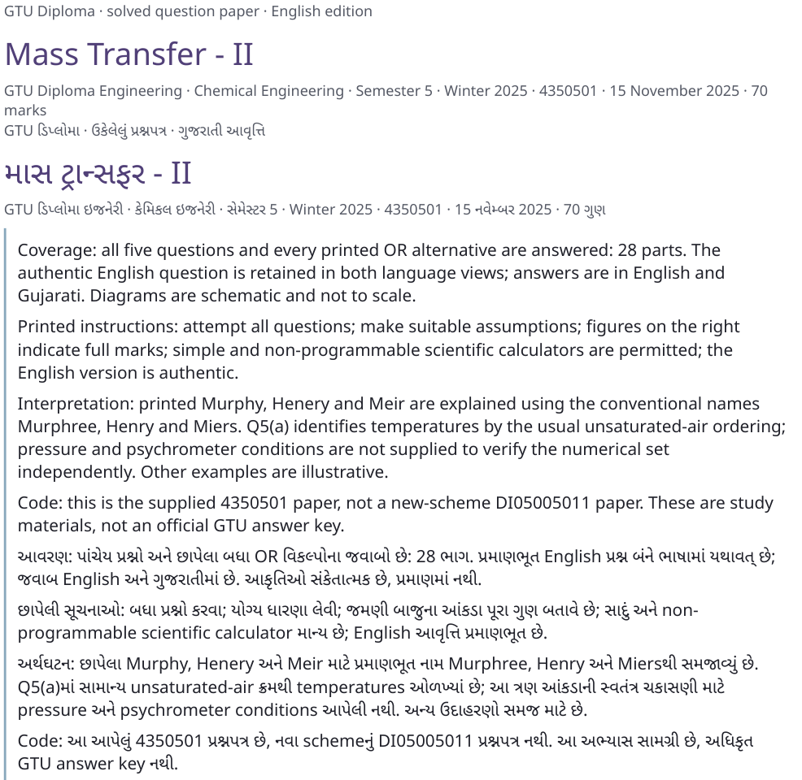
Question 1
Q1 · Contactors, tray hydraulics and crystal caking
Q.1 (a) · Classify equipment for gas liquid operations. · 3 marks
Gas–liquid contactors create interfacial area for transfer between gas and liquid.
• Gas dispersed in liquid: tray or bubble column and mechanically agitated vessel.
• Liquid dispersed in gas: spray tower and packed tower with wetted packing.
• High-velocity contact: venturi scrubber disperses droplets in the gas stream.
Example: a packed tower contacts rising gas with falling solvent for absorption.
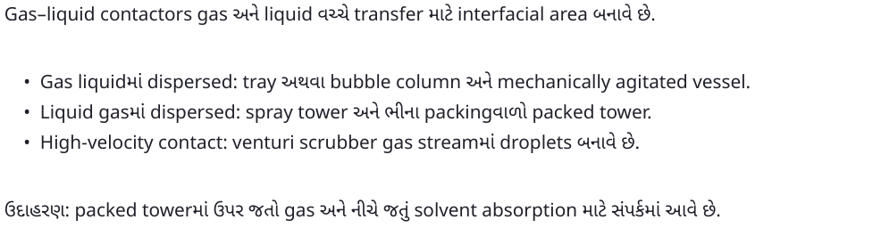
Q.1 (b) · There are two tray towers, tray tower 1 and Tray tower 2. Discuss the solution for following problems for the tower. 1) Tower 1 has excessive flooding. 2) Tower 2 has excessive weeping. · 4 marks
The two towers have opposite hydraulic problems, so use different corrective actions.
![Q.1 (b): preserved source formula, table or diagram, page 2. Extracted text context (formula notation may be incomplete): Tower Likely cause and practical response 1 · Flooding High vapour load, high liquid load or blocked drainage can cause backup. Reduce the relevant load safely, check pressure drop and clear blocked trays or downcomers. If persistent, review tray spacing and capacity. 2 · Weeping Vapour flow is too low to support the tray liquid. Increase boil-up within safe limits, or review tray hole area and operating range; avoid creating flooding.](winter-2025.assets/0002.webp)
Example: lowering reboiler duty can help vapour-driven flooding but would worsen low-vapour weeping. Confirm the actual cause before adjusting.
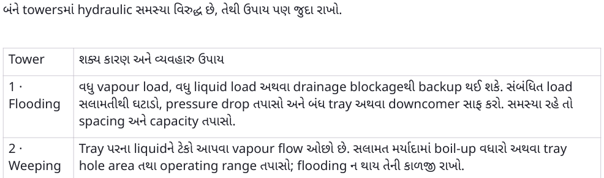
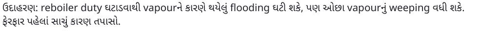
Q.1 (c) · Explain McCabe-Thiele Method to obtain number of theoretical plates in distillation column. · 7 marks
McCabe–Thiele is a graphical method for the theoretical equilibrium stages of a binary distillation. Use VLE data at the column pressure and assume approximately constant molar overflow in each section.

Illustrative graph: the curve and steps use an assumed binary system, not either exam’s data.
Stepwise construction and stage count
1. Plot equilibrium y* against liquid mole fraction x for the more volatile component and draw the diagonal y = x.
2. Mark bottoms xB, feed zF and distillate xD on the diagonal. Choose a feasible reflux R above its minimum.
5. Find the intersection of the rectifying line and q-line. Join it to (xB, xB) for the stripping line.
6. Start at (xD, xD), step horizontally to the equilibrium curve and vertically to the operating line; repeat. Switch to the stripping line at the feed intersection and continue to xB.
7. Count equilibrium steps. The feed stage is at the change of operating lines. A partial reboiler normally counts as one stage; a total condenser does not.
Illustrative tray conversion
If a separate construction gives 8 theoretical stages including one partial reboiler, there are 7
Limitations: non-constant molar overflow, a nonbinary mixture or an azeotrope may require a more detailed model; use appropriate stage efficiencies for real trays.
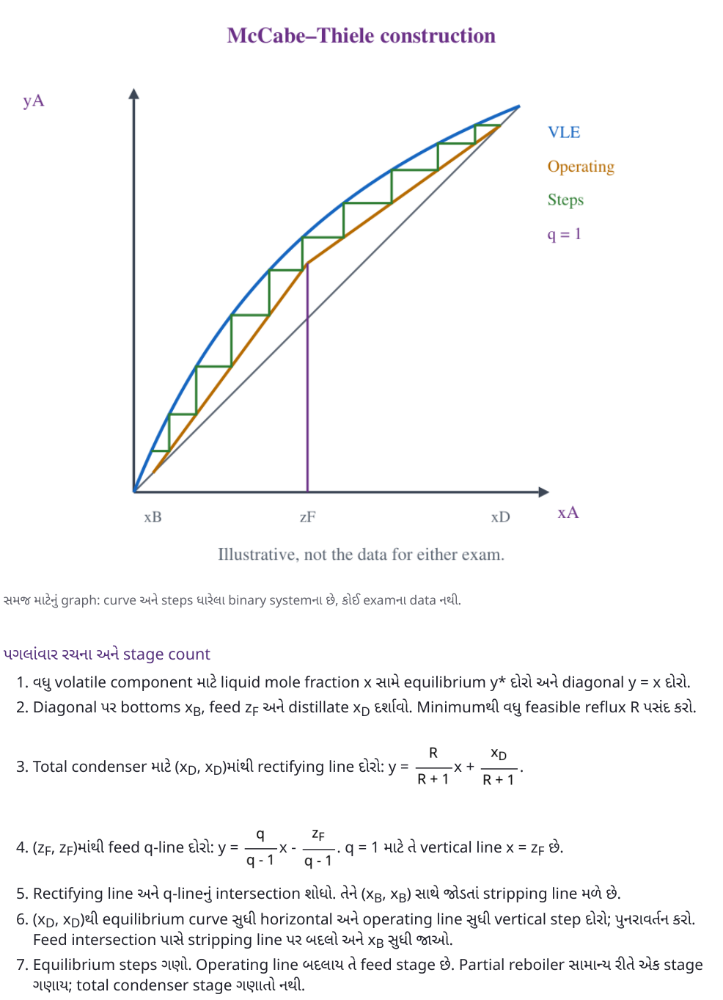
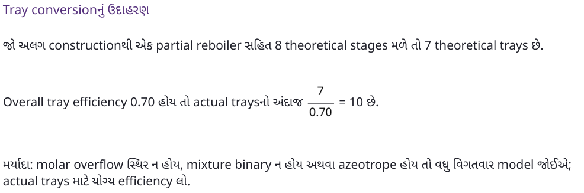
Q.1 (c) · Discuss Caking of crystals and its prevention. · OR · 7 marks
Caking is the formation of hard lumps when originally free-flowing crystals adhere during storage or handling. It makes discharge, dosing and dissolution difficult.
How caking develops
1. A susceptible crystal surface absorbs moisture or acquires liquid from wet product and humid air.
2. A small amount may dissolve at contact points; subsequent drying or temperature change deposits solid bridges between particles.
3. Pressure, long storage, fine particles or hydrate and phase changes can strengthen contacts. The dominant mechanism depends on the material.
![Q.1 (c) OR: preserved source formula, table or diagram, page 6. Extracted text context (formula notation may be incomplete): Cause Prevention Moisture and humidity Dry to the product specification, cool, use suitable moisture-resistant packaging and control storage humidity. Temperature cycling Avoid large temperature swings; protect hydrate stability rather than over-drying. Pressure and fines Limit stacking pressure and storage time; control the particle-size distribution and handling. Strong interparticle adhesion Where permitted, use a compatible anti-caking agent or coating and validate its effect on product quality.](winter-2025.assets/0012.webp)
Example: a moisture-sensitive salt can form bridges after humidification and drying. No one additive or drying temperature works for every salt; prevent contamination and follow the product specification.
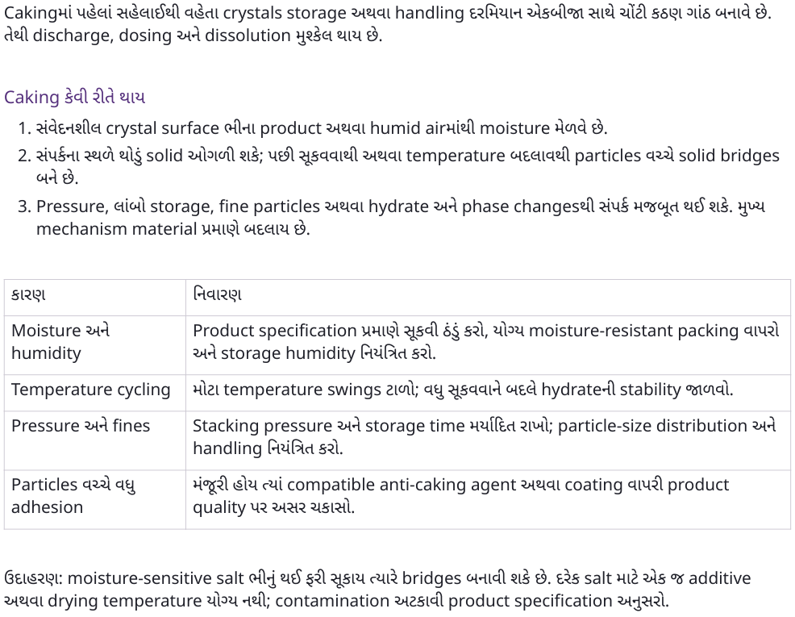
Question 2
Q2 · Gas–liquid contact and distillation
Q.2 (a) · Explain the importance of gas-liquid operations. · 3 marks
Gas–liquid operations bring the phases into contact so that mass, and often heat, can pass between them.
• Absorption removes pollutants or recovers a useful gas component.
• Distillation uses repeated vapour–liquid contact to separate liquids of different volatility.
• Humidification and cooling towers transfer water and heat between water and air.
Example: amine contact with natural gas removes acid gases before further processing.
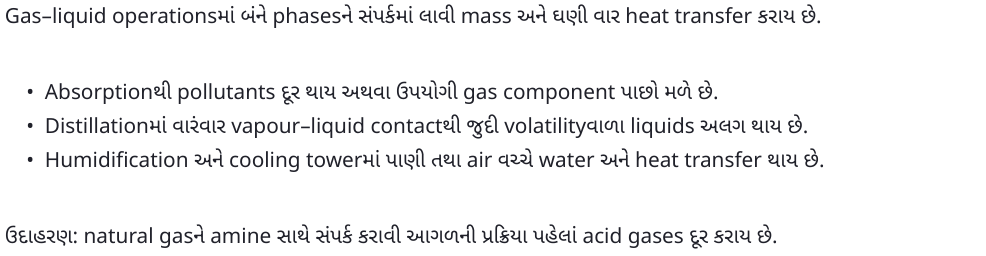
Q.2 (b) · Define following types of tray efficiencies: 1) Murphy Efficiency 2) Overall Tray efficiency · 4 marks
The paper prints “Murphy Efficiency”; the standard tray term is interpreted as Murphree vapour efficiency.
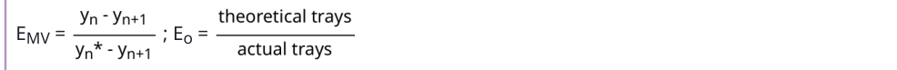
• yn+1 enters tray n from below; yn leaves it; yn* is the vapour composition in equilibrium with the liquid leaving that tray.
• Murphree efficiency compares actual vapour composition change on one tray with the equilibrium change.
• Overall tray efficiency compares theoretical trays to actual trays for the same separation; count an external reboiler or partial condenser separately.
Example: y entering = 0.1, y leaving = 0.4, y* = 0.6 gives EMV = 0.60. Ten ideal trays and fifteen actual trays give Eo = 0.667. The two efficiencies need not be equal.
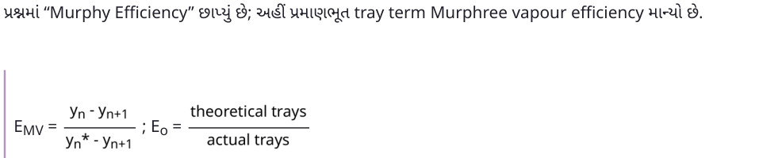
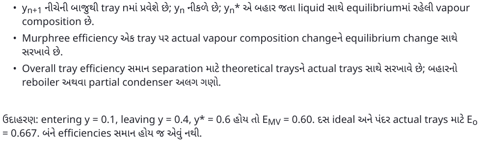
Q.2 (c) · For Differential distillation, Derive Rayleigh’s equation. · 7 marks
Rayleigh’s equation describes a well-mixed differential batch distillation with no reflux; the infinitesimal vapour leaving is in equilibrium with the remaining liquid.
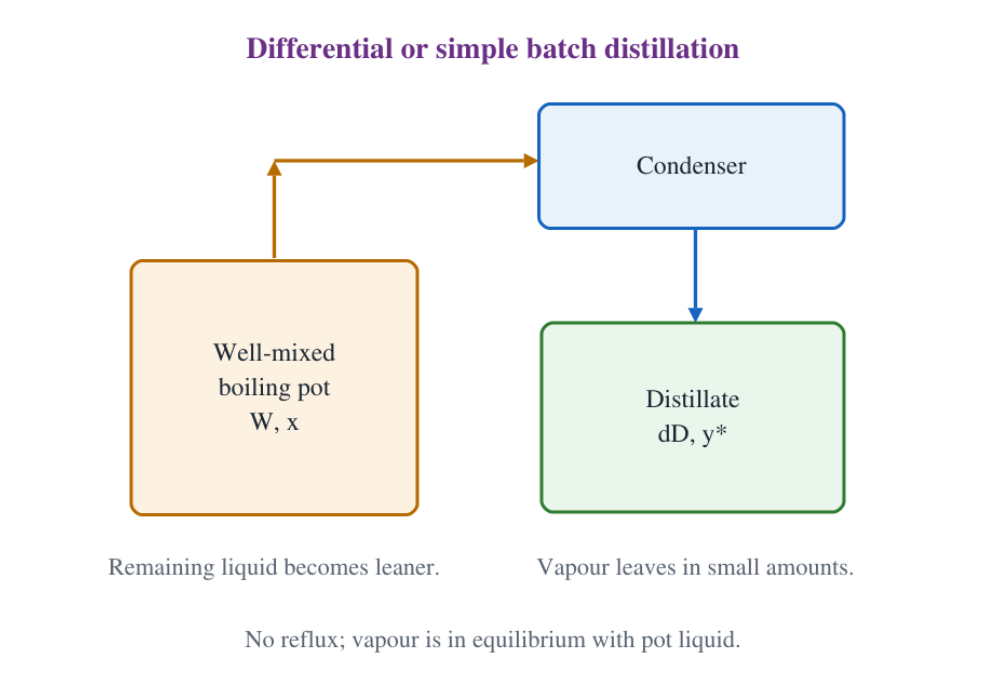
Schematic batch pot: distillate composition changes as the pot boils.
Symbols and assumptions
F, xF = initial liquid moles and more-volatile mole fraction.
W, x = instantaneous liquid moles and composition; y* = equilibrium vapour composition at x.
No reflux or vapour holdup; pressure is specified and equilibrium data apply.
Derivation, step by step
1. Total balance — dD = −dW, where dD is the positive distillate withdrawn.
2. Component balance — −d(Wx) = y* dD; hence d(Wx) = y* dW.
3. Expand — W dx + x dW = y* dW.

5. Integrate — From F, xF to W, xW, reverse the composition limits.
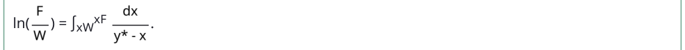
Illustrative calculation
F = 100 kmol; xF = 0.60; xW = 0.30; constant α = 2, assumed.
For this separate example: W ≈ 16.33 kmol and D ≈ 83.67 kmol.
Check: W is less than F and the pot is leaner in the more volatile component. At y* = x the integral becomes singular; the stated equilibrium and operating assumptions matter.
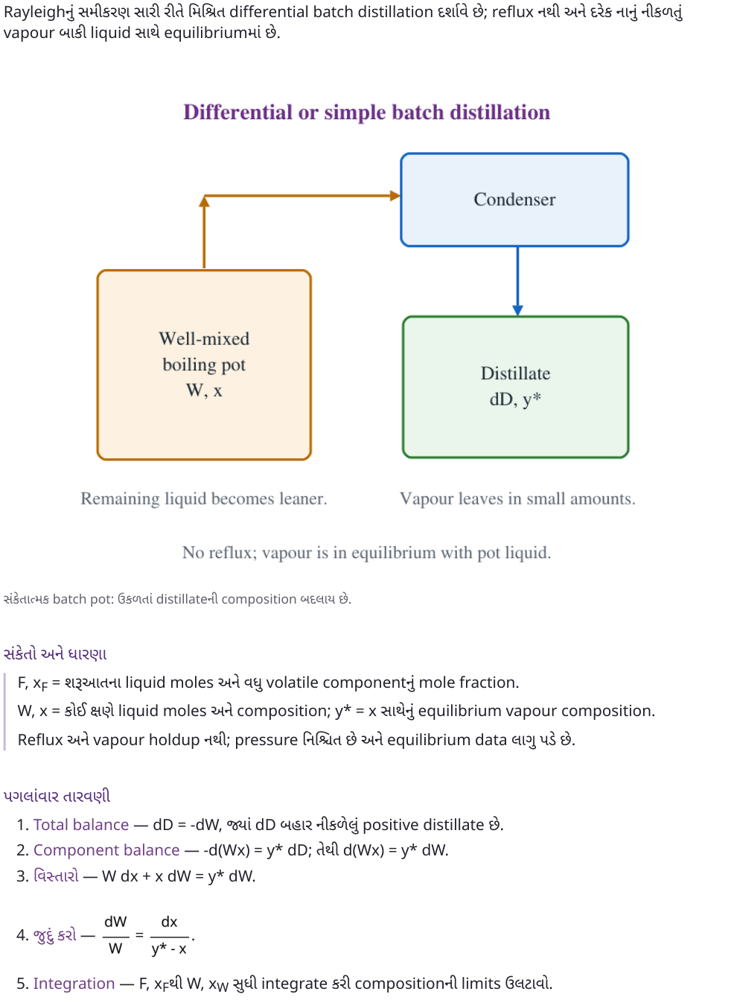
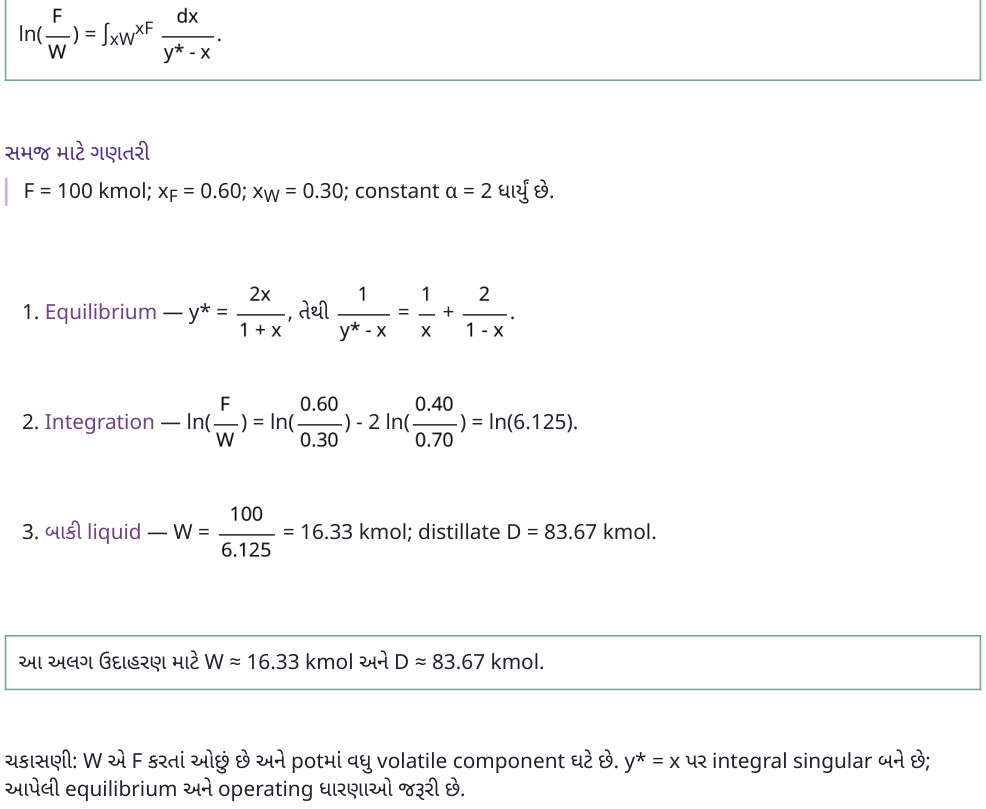
Q.2 (a) · List types of distillation used in chemical industries. · OR · 3 marks
Distillation separates components using differences in vapour–liquid equilibrium.
• Simple or differential batch distillation; flash distillation.
• Continuous fractional distillation or rectification.
• Steam and vacuum distillation; azeotropic and extractive distillation.
Example: vacuum distillation lowers the boiling temperature of heat-sensitive or high-boiling material.
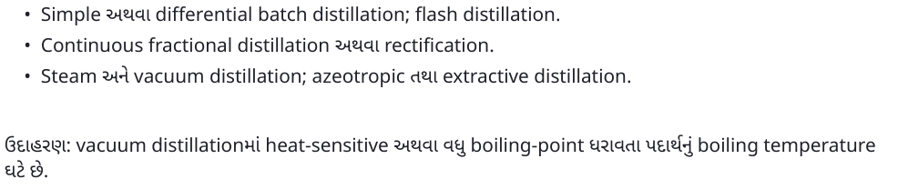
Q.2 (b) · Compare Raoult’s law and Henery’s law. · OR · 4 marks
The printed “Henery’s law” is interpreted as the standard Henry’s law. Both relate a gas-phase partial pressure to liquid composition at fixed temperature.
![Q.2 (b) OR: preserved source formula, table or diagram, page 13. Extracted text context (formula notation may be incomplete): Basis Raoult and Henry Equation Raoult: pi = xipi°. Henry: pi = Hixi for this chosen convention. Reference and range Raoult uses pure-component saturation pressure and holds for an ideal liquid; Henry uses an experimentally determined H for dilute solute in a specified solvent. Example Near-ideal benzene–toluene may approximately follow Raoult; dilute oxygen in water may use a suitable Henry constant.](winter-2025.assets/0028.webp)
H depends on temperature, solvent and the definition used; other Henry-law conventions use reciprocal constants. Do not substitute a constant without checking its units and basis.
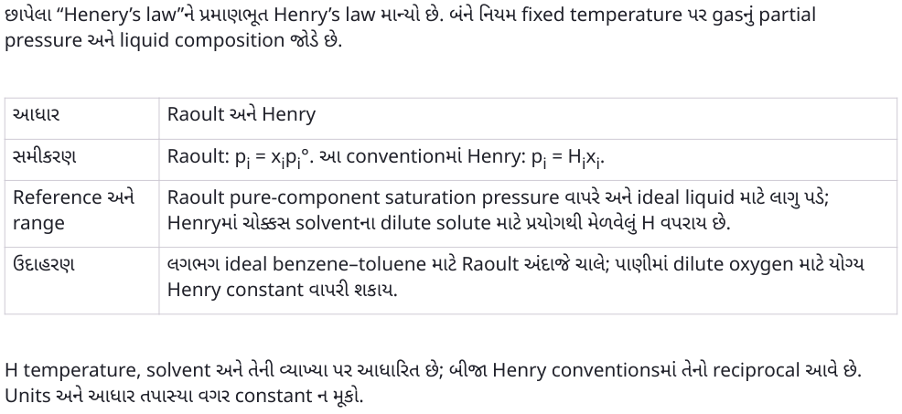
Q.2 (c) · Discuss, when do we use countercurrent arrangement and co-current arrangement in absorption tower. · OR · 7 marks
Countercurrent means gas and liquid flow in opposite directions; co-current means they move in the same direction.
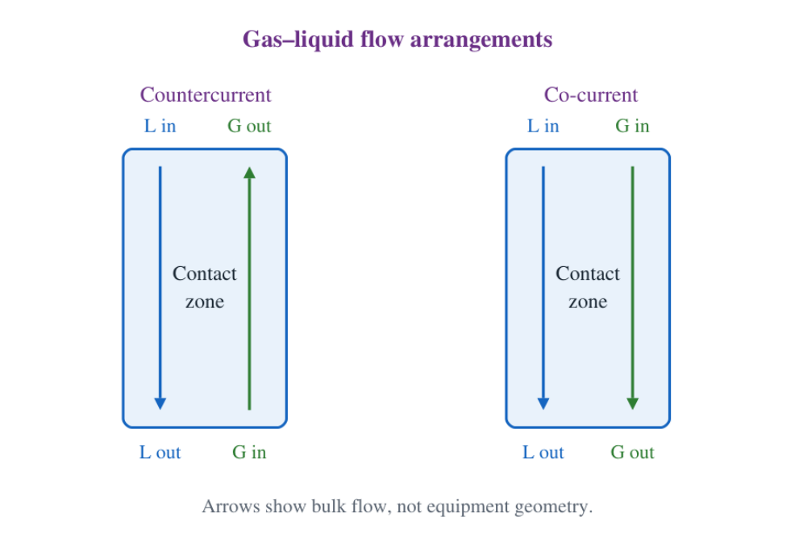
Arrows show bulk directions; the hardware can differ from this schematic.
How each arrangement works
1. In countercurrent contact, solute-rich gas meets richer liquid at one end and lean outlet gas meets fresh solvent at the other. The driving force can be maintained over the length.
2. In co-current contact, fresh liquid meets the richest gas at the inlet; both streams then become closer to equilibrium as they move together.
Arrangement When useful and limitation
Countercurrent Common for high recovery and a low solute concentration in the outlet gas; check minimum solvent rate, flooding and pressure drop.
Co-current Useful in short-contact devices such as some venturi scrubbers or for rapid reacting duties when process and heat control favour it; equilibrium at the common outlet limits deep removal in a single contact.
Example: an ammonia absorber commonly sends gas up and water down. A co-current scrubber can handle a fast contacting duty, but final selection needs equilibrium, kinetics, heat and hydraulic checks.
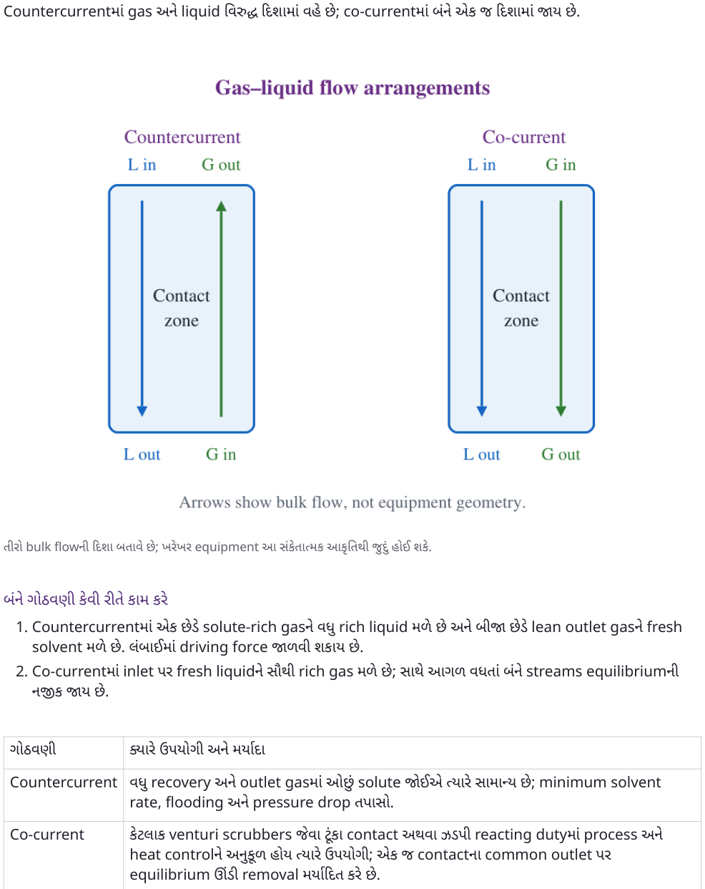
Question 3
Q3 · Reflux, balances and ion exchange
Q.3 (a) · Define:1) Minimum reflux ratio 2) Total Reflux ratio 3) Azeotrope · 3 marks
• Minimum reflux ratio: limiting R for the specified separation; a pinch makes the theoretical stage requirement tend to infinity.
• Total reflux ratio: all condensate is returned, D = 0 and R tends to infinity; no distillate is withdrawn.
• Azeotrope: at a specified pressure, a liquid mixture boils with the same liquid and equilibrium vapour composition at a particular composition.
Example: ethanol–water forms a minimum-boiling azeotrope near atmospheric pressure; ordinary distillation at that pressure cannot cross it.
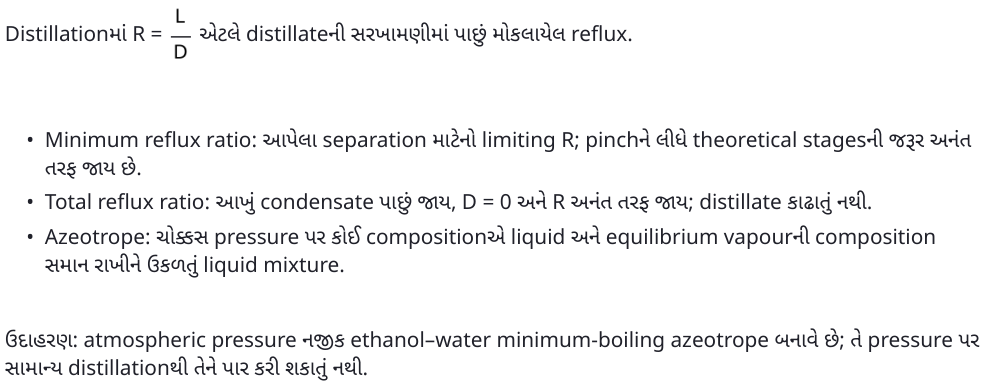
Q.3 (b) · Define relative volatility and state its significance in distillation operation. · 4 marks
Relative volatility αAB compares the equilibrium vapour enrichment of A with that of B.
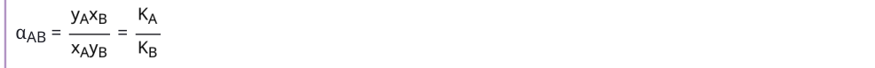
• For A as the more volatile component, α greater than 1 means vapour is relatively richer in A.
• The closer α is to 1, the harder ordinary distillation is and generally the more stages or reflux are needed.
• At α = 1 the two phases have the same relative composition at that state; an azeotrope cannot be crossed by ordinary distillation at that pressure.
Example: at the same conditions a mixture with α = 2 is generally easier to separate than one with α = 1.1. α may change with composition and temperature.
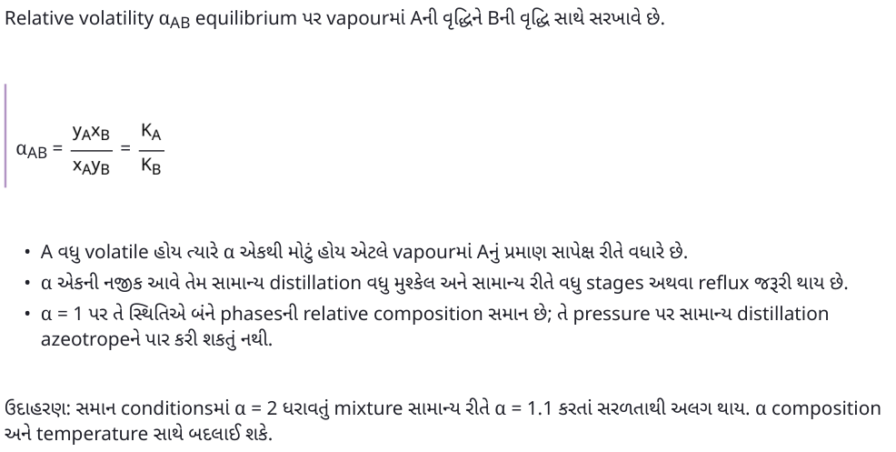
Q.3 (c) · A fractionating column is designed to separate 15000 kg/h of a feed containing 60% toluene and 40% benzene into an overhead product containing 97% benzene and a waste containing 98% toluene. All % are by weight. Calculate the weights of the product and waste product per hour. · 7 marks
Use a total and benzene mass balance; every percentage in this question is by weight.
Given
F = 15000 kg h⁻¹; benzene mass fraction zF = 0.40.
Overhead D has benzene fraction xD = 0.97.
Waste W has 0.98 toluene, so benzene fraction xW = 0.02.
Steady operation with only the two specified products.
Step-by-step solution
1. Total — D + W = 15000, so W = 15000 − D kg h⁻¹.
2. Benzene — 15000(0.40) = 0.97D + 0.02W.
3. Substitute — 6000 = 0.97D + 0.02(15000 − D).
5. Waste — W = 15000 − 6000 = 9000 kg h⁻¹.
Overhead product = 6000 kg h⁻¹; waste = 9000 kg h⁻¹.
Check: total 6000 + 9000 = 15000 kg h⁻¹; benzene 5820 + 180 = 6000 kg h⁻¹. Do not use mole fractions for these weight percentages.
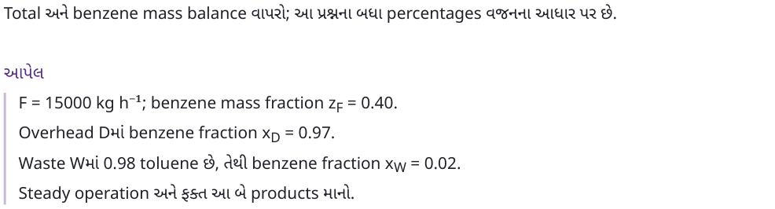
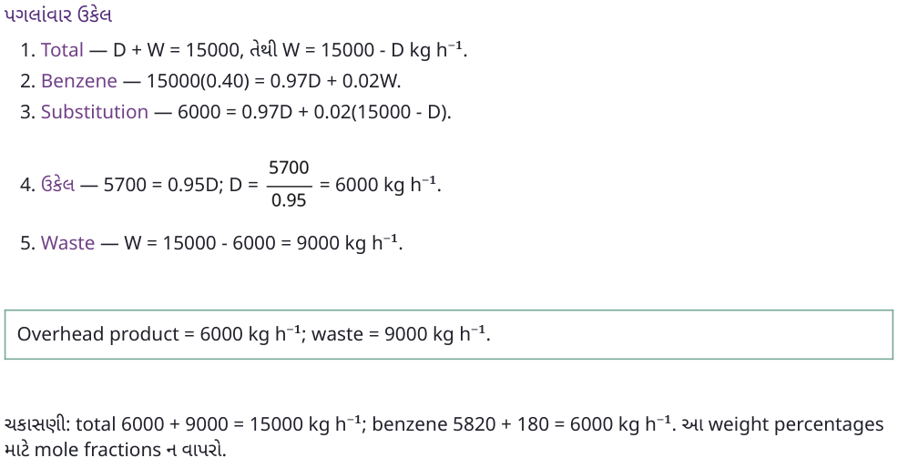
Q.3 (a) · Define 1) Dew Point 2) Dry bulb temperature 3) Wet bulb temperature with respect to humidification operation. · OR · 3 marks
For a gas–vapour mixture, the three temperatures have different meanings:
1. Dew point: onset-of-condensation temperature on cooling at constant pressure and vapour content.
2. Dry-bulb temperature: actual gas temperature measured by an ordinary dry, shielded thermometer.
3. Wet-bulb temperature: steady reading of a wetted, ventilated thermometer exposed to the gas.
Example: in unsaturated air the wetted bulb is cooled by evaporation, so its reading is below the dry-bulb reading.
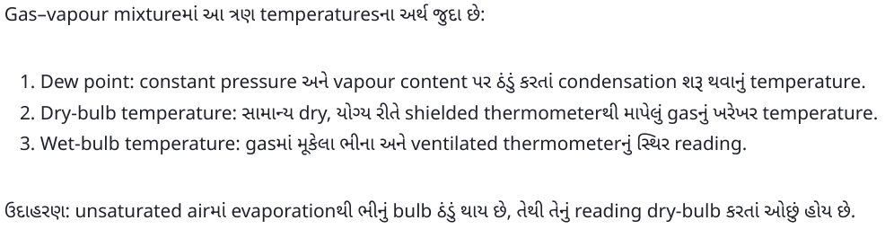
Q.3 (b) · Explain the concept of minimum liquid to gas ratio in absorption operation. · OR · 4 marks
The minimum liquid-to-gas ratio is the limiting solvent rate, on a consistent solute-free basis, that can approach the specified gas separation.
• For fixed inlet gas, target outlet gas and entering solvent, reducing solvent makes the operating line approach the equilibrium curve.
• At the minimum a pinch occurs: local driving force approaches zero and an ideal tower requires unbounded height or stages.
• With a bottom-end pinch, the rich solvent is in equilibrium with entering gas and the limiting slope follows the endpoint balance; other systems may pinch internally.
In practice choose a rate above the minimum, then check capacity, height, recovery and cost. Example: a solvent rate exactly at the pinch is not a finite-height design.
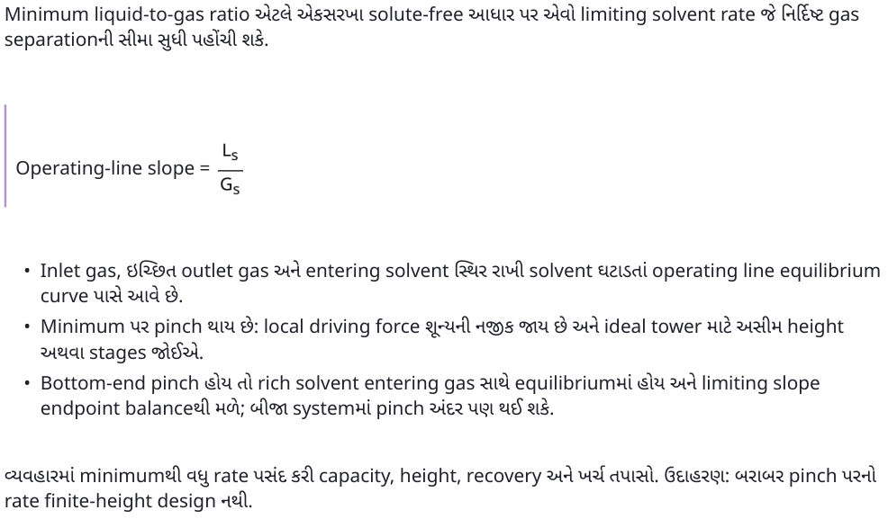
Q.3 (c) · State principle of ion-exchange and list applications of ion-exchange. · OR · 7 marks
Ion exchange is a reversible exchange of dissolved ions with mobile counter-ions attached to fixed charged groups on an insoluble resin. Electrical charge is conserved.
Principle and operation
1. Choose a cation or anion exchanger with the required functional groups and counter-ion form.
2. Pass solution through the resin. Target ions exchange with resin counter-ions; the fixed resin groups remain on the solid.
3. Stop service before unacceptable breakthrough. Regenerate the exhausted resin with a suitable acid, alkali or salt, then rinse before reuse.
2 R–SO3⁻Na⁺ + Ca²⁺ ⇌ (R–SO3⁻)₂Ca²⁺ + 2 Na⁺
Example: sodium-form cation resin softens water by taking up calcium and releasing an equivalent charge of sodium. Brine can regenerate this resin; spent brine needs treatment.
Applications
• Water softening and demineralization with suitable cation and anion beds.
• Recovery or removal of selected metal ions from process streams.
• Purification of pharmaceutical, food or chemical solutions and condensate polishing.
Limits: selectivity, capacity, pH, fouling and disposal of regenerant determine suitability. Ion exchange does not automatically remove every nonionic contaminant or microorganism.
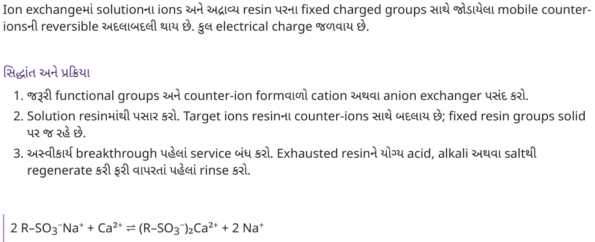
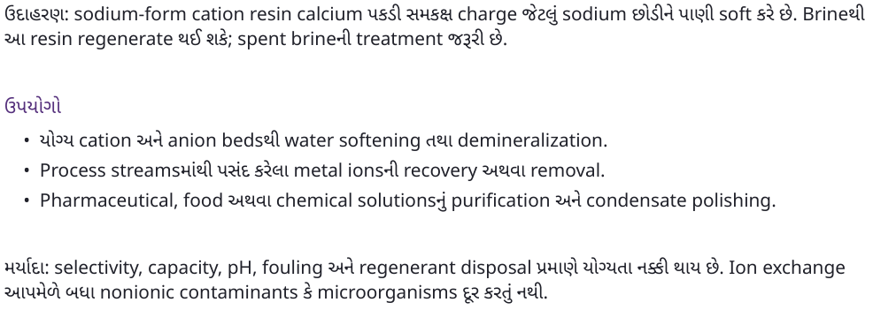
Question 4
Q4 · Humidity, cooling towers and adsorption
Q.4 (a) · In a mixture of benzene vapor (A) and nitrogen gas (B) at a total pressure of 800 mmHg and a temperature of 60°C, the partial pressure of benzene is 100 mmHg. Calculate Absolute humidity (Y’). Hint: Molecular weight of Benzene = 78.11 gm/mol Molecular weight of Nitrogen =28 gm/mol · 3 marks
Absolute humidity Y′ is mass of benzene vapour per mass of dry nitrogen. Treat the gas mixture as ideal.
Given
P = 800 mmHg; pA = 100 mmHg; T = 60 °C.
MA = 78.11 g mol⁻¹ for benzene; MB = 28 g mol⁻¹ for nitrogen.
3. Calculate — Y′ = 0.39852 kg benzene per kg dry nitrogen.
Y′ ≈ 0.3985 kg benzene per kg dry nitrogen.
Check: the benzene mole ratio is 100 to 700, and the mass ratio is larger because benzene is heavier. Pressure units cancel.
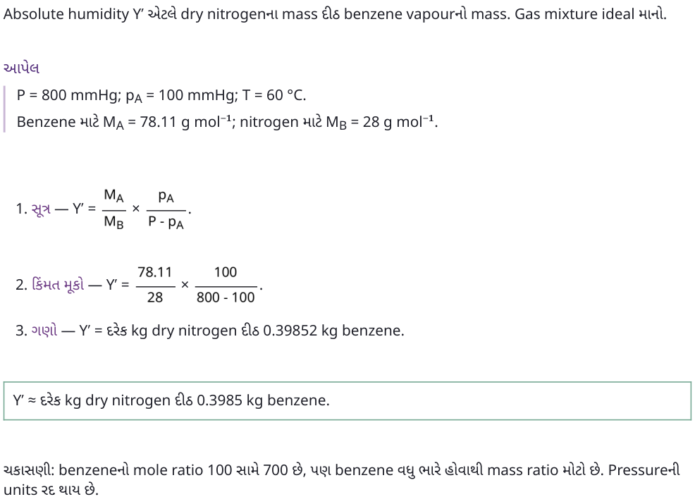
Q.4 (b) · Classify cooling towers. · 4 marks
Cooling towers are classified on several independent bases:
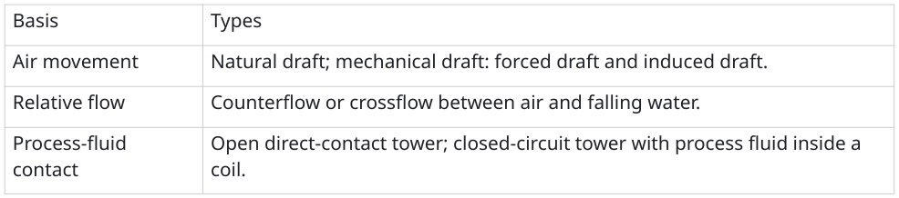
Example: an induced-draft counterflow tower has a fan at the air outlet and air rising against the water. These labels describe different aspects and can be combined; closed-circuit equipment must be designed for its actual duty.
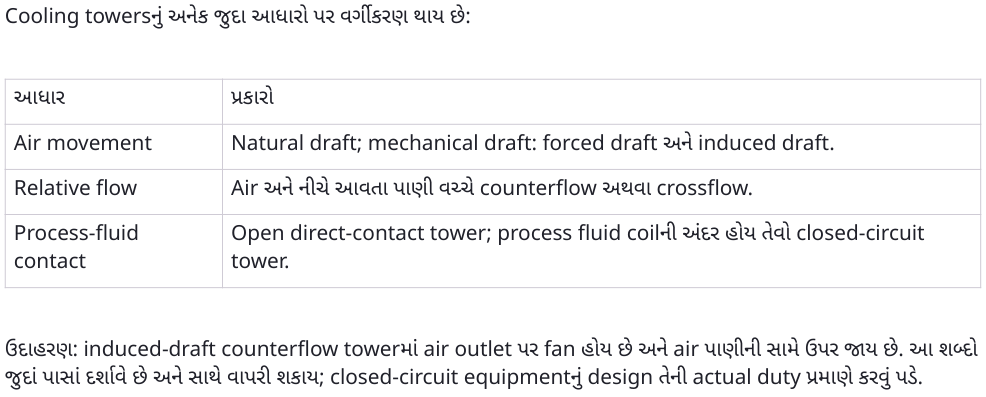
Q.4 (c) · Explain construction and working of Higgins contactor with schematic diagram. · 7 marks
A Higgins loop contactor uses an intermittently advanced packed resin bed to provide near- continuous countercurrent ion exchange and regeneration in separate zones.
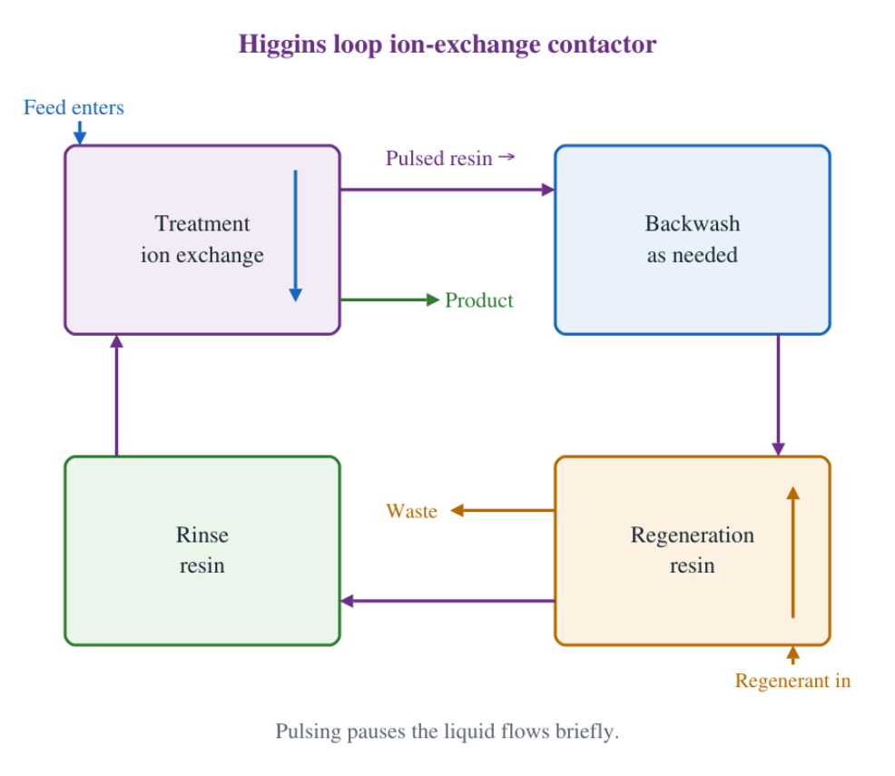
Conceptual closed loop; arrows show the periodic direction of resin movement, not simultaneous flowing resin.
Construction — part and purpose
1. A closed loop contains exchange resin and a treatment section for contact with feed solution.
2. Separate backwash, regeneration and rinse sections clean and restore the exhausted resin; valves limit mixing between zones.
3. A pulse system and loop valves advance resin around the loop; distributors and outlet connections carry feed, product, regenerant and waste separately.
Working — step and reason
1. During service, contaminated feed contacts resin in the treatment zone and target ions exchange with resin counter-ions. Treated liquid leaves separately.
2. Loaded resin is moved to backwash and regeneration zones; a suitable regenerant displaces the retained ions, and rinse removes residual reagent.
3. Periodically interrupt the liquid flows and apply a hydraulic pulse to advance resin around the loop; regenerated resin moves into the treatment section.
4. After the pulse, resume feed and regenerant flow. The stepwise resin movement is opposite to the service-liquid direction, approximating countercurrent contact.
Example: a suitable cation resin can soften a water stream. It offers good resin utilization but needs controlled valves, compatible regenerant and safe treatment of the spent regenerant.
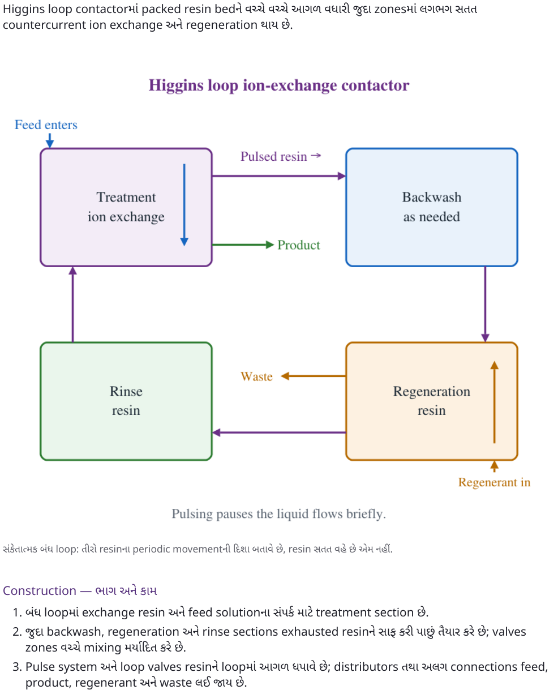
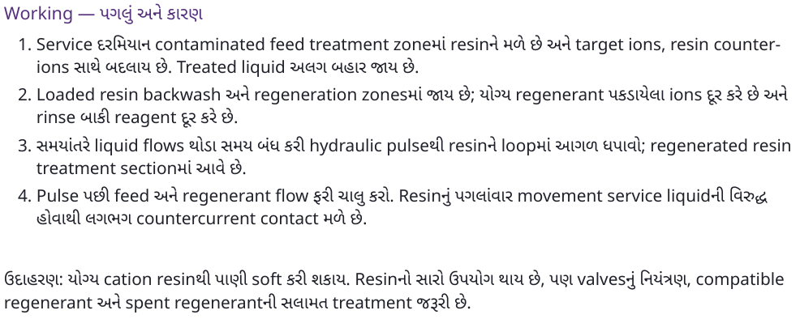
Q.4 (a) · List commonly used adsorbents in Chemical industry. · OR · 3 marks
Adsorbents are porous solids selected for the species to be removed and the operating conditions.
• Activated carbon for many organic compounds and colour.
• Silica gel and activated alumina for moisture drying.
• Zeolites or molecular sieves for selective gas and water-vapour adsorption; some clay adsorbents are used for treating oils.
Example: a silica-gel bed dries air. Capacity and regeneration requirements differ by adsorbent.
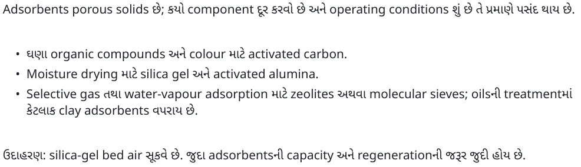
Q.4 (b) · Explain the factors governing operation of cooling towers. · OR · 4 marks
The performance of a cooling tower depends on the heat load, entering air and effectiveness of gas–liquid contact.
• Air condition: entering wet-bulb temperature sets the practical lower limit for cooled water; the difference is the approach.
• Heat and water load: hot-water temperature, water flow and required outlet temperature determine the range and duty.
• Airflow and contact: fan performance, air-to-water ratio, fill area, distribution and contact time affect transfer.
• Water quality and maintenance: scale, fouling, biological growth, drift and recirculation of warm moist exhaust can impair performance.
Example: a higher entering wet-bulb temperature generally increases the achievable cold-water temperature at the same duty. A lower approach needs more effective contact or greater equipment capacity; fan and water use also matter.
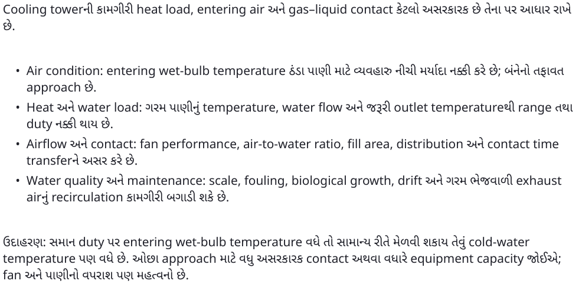
Q.4 (c) · Explain construction and working of Pressure Swing Adsorption (PSA) with schematic diagram. · OR · 7 marks
Pressure swing adsorption (PSA) separates gases by preferential adsorption at higher pressure and regeneration at lower pressure. At least two beds can alternate to supply product nearly continuously.

One step of a two-bed cycle; the valves later reverse the duties.
Construction — part and purpose
1. Two pressure-rated vessels contain a suitable porous adsorbent; distributors and supports retain the beds.
2. A compressor and feed valves admit gas to the bed on adsorption duty.
3. Product, blowdown and purge valves plus a controller allow the other bed to regenerate and then swap duty.
Working — step and reason
1. Compress feed and send it through bed A at high pressure. The selected impurity is preferentially retained and a less-adsorbed product leaves.
2. Isolate and depressurize bed B. The lower partial pressure promotes desorption; a small clean purge may remove remaining impurity to the vent.
3. Repressurize the regenerated bed and switch the valves: B adsorbs while A regenerates. Equalization and purge details depend on the cycle.
Step Purpose
High-pressure adsorption Produce purified gas.
Low-pressure regeneration Restore useful adsorbent capacity.
Example: an appropriate silica-gel or alumina system dries compressed air. Bed choice, cycle time, product loss and safe disposal of concentrated vent gas must be checked; pressure change does not remove all strongly irreversible contaminants.
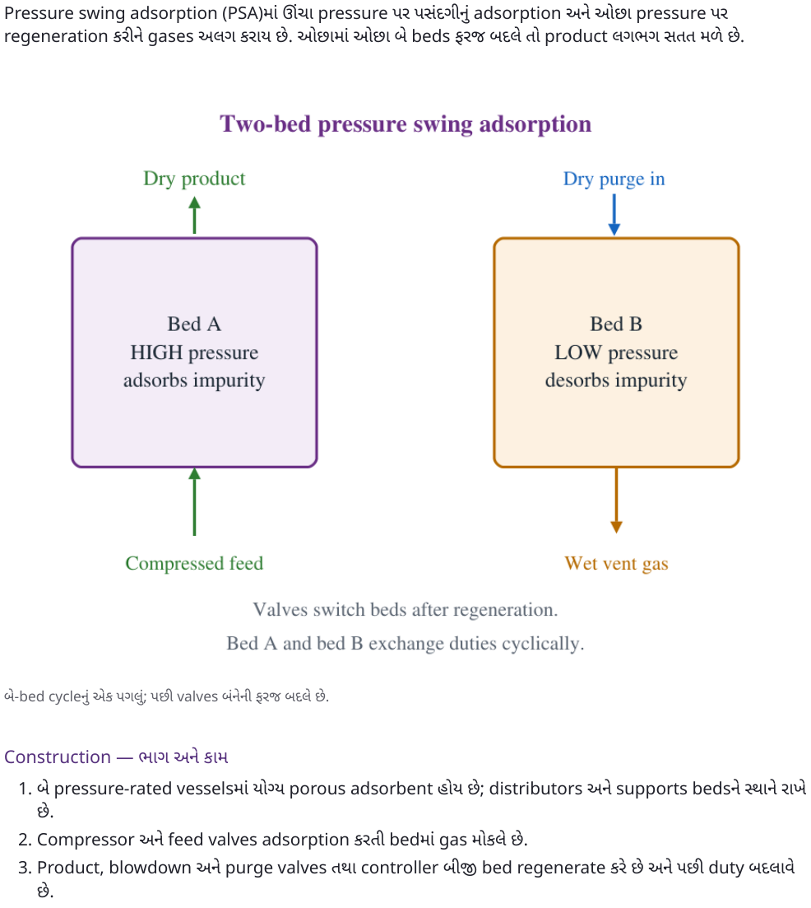
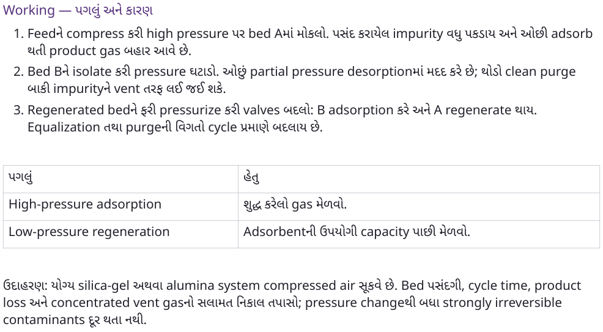
Question 5
Q5 · Humidification, packed towers and crystallization
Q.5 (a) · During an experiment in humidification study there were three different temperatures observed as follows: Temperature 1: 35 oC Temperature 2 :31 oC Temperature 3: 25 oC Among the observed temperatures, select which is dry bulb temperature, wet bulb temperature and dew point temperature with reasons. · 3 marks
For a conventional unsaturated air–water mixture with a correctly ventilated wet bulb, the usual order is dry-bulb ≥ wet-bulb ≥ dew-point temperature.
• Dry bulb = 35 °C: the ordinary thermometer reads the highest of these three.
• Wet bulb = 31 °C: evaporation cools the wet thermometer below the dry-bulb reading.
• Dew point = 25 °C: further cooling at constant vapour content brings the gas to saturation and the onset of condensation.
At saturation the three coincide. At about 1 standard atm, a normal psychrometric estimate for dry bulb 35 °C and dew point 25 °C gives a wet bulb around 27–28 °C, not 31 °C. The question does not give pressure or psychrometer conditions, so ordering identifies the intended labels but does not independently verify the three readings as a physically consistent set.
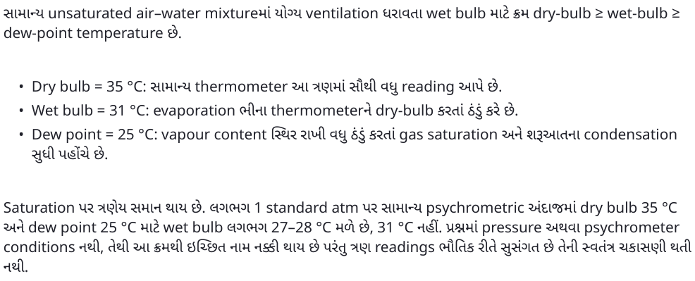
Q.5 (b) · Explain the concept of HETP in Packed tower. · 4 marks
HETP, height equivalent to a theoretical plate, is the effective packed height that gives the separation of one equilibrium stage for a specified system and operating condition.

• Z is the effective packed height and N is its equivalent number of theoretical stages.
• A smaller HETP means more stage-equivalent separation per unit height under the same conditions.
• HETP depends on packing, fluids and loading; it is not a physical tray spacing.
Example: Z = 6 m and HETP = 0.6 m give N = 10 theoretical stages in the packing; a reboiler or condenser outside the packing is counted separately.
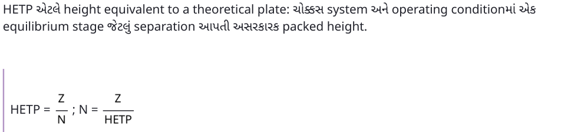
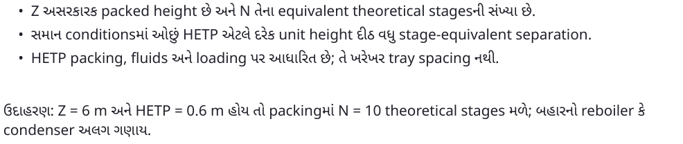
Q.5 (c) · Explain working principle and operation of Swenson-walker crystallizer with sketch. · 7 marks
The Swenson–Walker crystallizer is a continuous cooling crystallizer. Cooling a suitable concentrated solution produces supersaturation, nucleation and growth.

A longitudinal schematic: coolant is in the external jacket and does not mix with the solution.
Construction — part and purpose
1. A long open trough with a semicylindrical bottom receives hot concentrated solution at one end and discharges slurry at the other.
2. An external water jacket removes heat; cooling water commonly flows opposite to the solution.
3. A slow, long-pitch spiral agitator runs close to the cooled bottom to mix and lift crystals and reduce deposits.
4. A discharge and downstream drain, filter or centrifuge separate crystals from mother liquor.
Working — step and reason
1. Feed the hot solution continuously and pass cooler water through the jacket; heat crosses the wall without mixing the fluids.
2. As the solution cools, its equilibrium solubility falls for a suitable solute, producing supersaturation; nuclei form or added seeds grow.
3. The rotating spiral keeps crystals suspended, moves slurry along the trough and limits crystal accumulation on the cold wall.
4. Withdraw crystals with mother liquor, separate the solid and handle or recycle the liquor as appropriate.
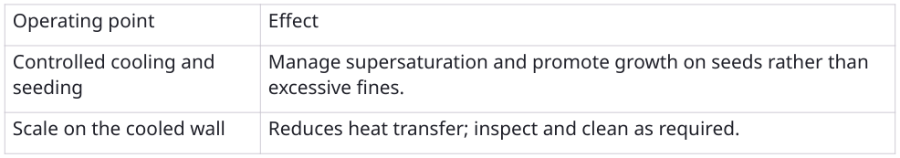
Example: cooling a concentrated salt solution whose solubility decreases with temperature produces crystals. Cooling rate, seeding and residence time affect crystal size; scaling and fouling reduce heat transfer. Not every solute has the required temperature–solubility behaviour.
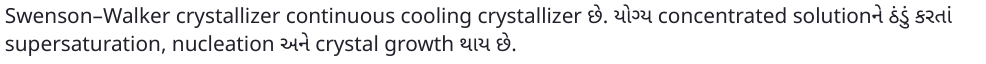
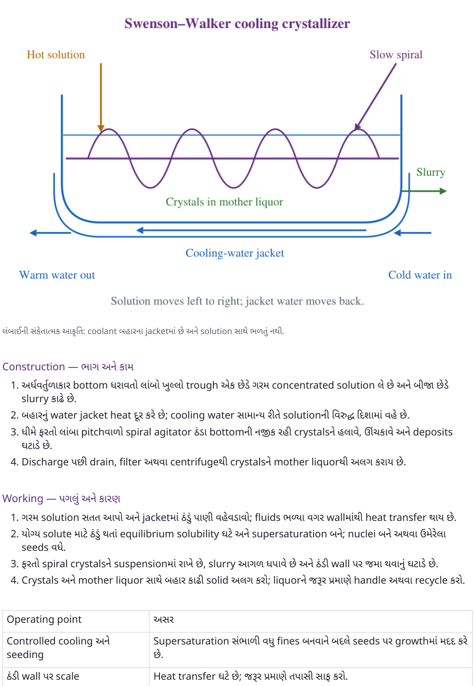
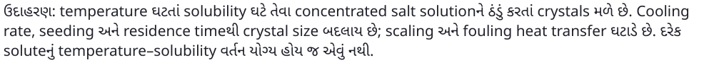
Q.5 (a) · List Industrial applications of Gas absorption. · OR · 3 marks
Industrial gas absorption is used to recover a gas solute or remove it from a carrier gas.
• Water absorbs NH₃ from ammonia–air streams for recovery.
• Aqueous amine removes CO₂ or H₂S from suitable process gases.
• Alkaline liquor absorbs SO₂ from flue gas; suitable scrubbing liquids also control acidic fumes.
Example: flue-gas scrubbing reduces SO₂ before discharge; the spent liquid must be treated.
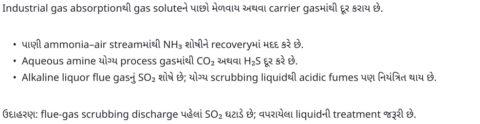
Q.5 (b) · Explain selection criteria for solvent in gas absorption operation. · OR · 4 marks
Choose an absorbent for the actual gas, pressure, temperature and required outlet purity.
• Capacity and selectivity: high solubility or useful reaction for the target, with low absorption of valuable carrier gas.
• Recovery: solvent should be reasonably easy to regenerate, with low volatility and make-up loss.
• Hydraulics and compatibility: suitable viscosity and wetting, low foaming and manageable corrosion.
• Safety and cost: consider toxicity, flammability, disposal, regeneration energy and total cost.
Example: water can absorb NH₃ because it is highly soluble; the rich stream still needs safe handling. No single solvent is best for every gas.
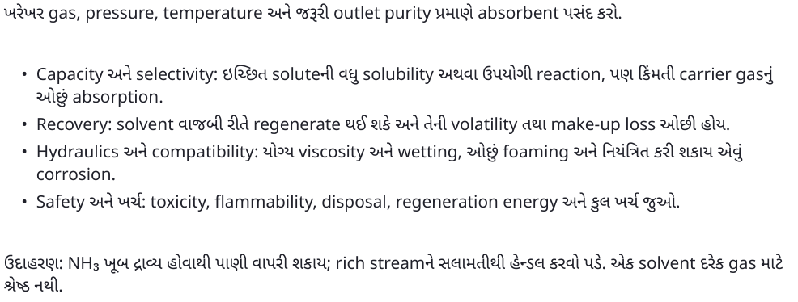
Q.5 (c) · Explain Meir’s theory of crystallization. · OR · 7 marks
Miers’ supersaturation theory relates solubility, nucleation and crystal growth to concentration and temperature. The question prints “Meir’s”; the standard name Miers is used here.
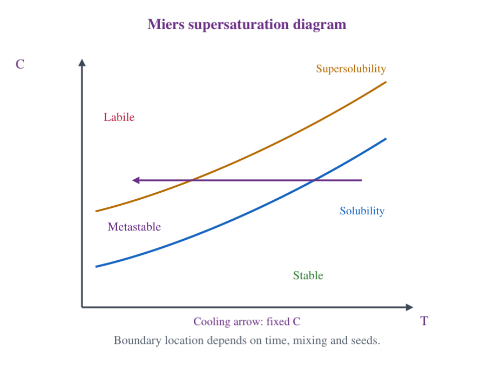
Qualitative concentration–temperature diagram. Curves are illustrative, not measured solubility data.
The two boundaries and three zones
![Q.5 (c) OR: preserved source formula, table or diagram, page 38. Extracted text context (formula notation may be incomplete): Region Meaning Stable or undersaturated Below the equilibrium solubility curve: crystals tend to dissolve rather than grow. Metastable Above solubility but below the approximate supersolubility boundary: existing seed crystals can grow while spontaneous primary nucleation is relatively unlikely. Labile Beyond the supersolubility boundary: spontaneous nucleation is more likely and many small crystals may appear.](winter-2025.assets/0070.webp)
Cooling and seeding
1. Start with a clear solution and cool at approximately constant dissolved concentration until the solubility curve is crossed.
2. In the metastable zone add suitable seeds: dissolved solute can grow on them and reduce supersaturation.
3. If sufficient supersaturation is reached without effective seeds, primary nucleation becomes more likely; subsequent growth reduces dissolved concentration towards equilibrium.
Example: controlled cooling and seeding of a suitable salt solution can give fewer, larger crystals than uncontrolled rapid nucleation.
Limit: the supersolubility boundary is not a universal sharp equilibrium line. It depends on time, cooling rate, mixing, impurities, vessel and seeds; real nucleation is probabilistic.
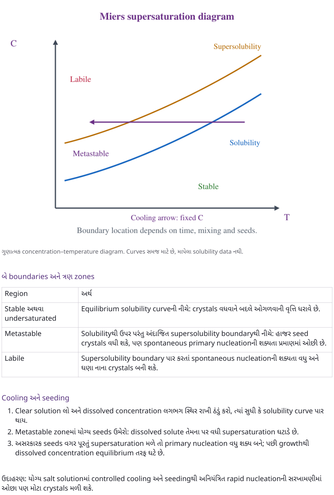
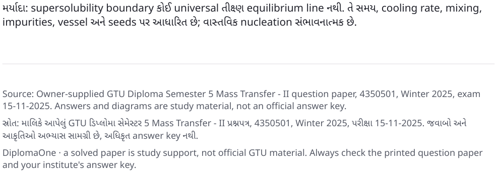